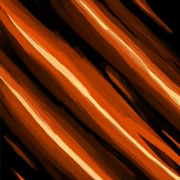
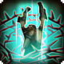
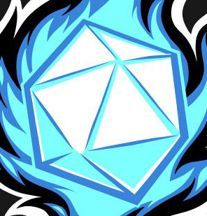
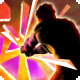

Tranchant furieux
 1 PA (Action Combo)
1 PA (Action Combo)
Les Lansquenet se sont tous entraînés intensivement pour libérer la puissance innée des armes qu'ils manient. Les Lansquenets peuvent choisir d'ajouter leur modificateur de Force à un jet d'attaque (minimum 1). Cela peut être utilisé avant ou après tout jet d'attaque. Le Tranchant furieux peut être utilisé un nombre de fois par repos long égal au modificateur de Constitution du Lansquenet (minimum 1) plus la moitié de leur niveau, arrondi à la baisse.

Double frappe
 1 PA (Action Bonus)
1 PA (Action Bonus)
Les Lansquenets peuvent exploiter l'élan d'un coup pour effectuer une autre attaque. Placez un d6 sur la table, en commençant par le 6. Chaque fois que le Lansquenet attaque directement avec son arme équipée, il peut réduire le dé de 1; lorsque ce dé est à un nombre égal ou inférieur à la valeur indiquée sur leur table de niveau, ils peuvent le réinitialiser à 6 et effectuer une attaque en tant qu'action bonus. Le dé est réinitialisé à 6 au début du combat.
Charge téméraire
 1 PA (Réaction)
1 PA (Réaction)
L'élan pur et la solidité de l'armure étincelante d'un Lansquenet dévient toute tentative de les endommager. Lorsqu'un ennemi effectue une attaque de n'importe où en dehors de la portée de mêlée du Lansquenet, il peut utiliser sa réaction pour réduire les dégâts de la moitié de son niveau + son modificateur de Constitution (minimum 1), et se déplacer jusqu'à 3 mètres en ligne droite vers cet ennemi. Ce déplacement est obligatoire si la Charge Téméraire est activée. La Charge Téméraire ne peut pas réduire les dégâts en dessous de 1.
Spécialité d'arme
 Spécialisation
Spécialisation
En atteignant le troisième niveau, les Lansquenets ont choisi une arme dans laquelle se spécialiser. Choisissez une arme - épées, haches ou boucliers. Le Lansquenet acquiert des traits supplémentaires de cette spécialité d'arme au fur et à mesure qu'il monte en niveau.
Avant-garde
 Passif
Passif
Dans une démonstration de bravoure et d'habileté, le Lansquenet peut décider de prendre la tête de la formation et d'agir avec un zèle digne de celui qui porte un équipement beaucoup plus léger. Au début du combat, le Lansquenet peut choisir de perdre 1 de Défense ; chaque tour, il agit en haut de l'ordre d'initiative et gagne 1 PA à dépenser uniquement sur une compétence de Lansquenet. Ce PA bonus est perdu à la fin du tour s'il n'est pas dépensé, mais le Lansquenet peut temporairement dépasser le plafond de 4 PA en se voyant accorder un PA supplémentaire grâce à l'Avant-garde.
Œil pour les profits
Passif
Un sage Lansquenet a un jour noté, "un peu d'argent supplémentaire n'a jamais fait de mal à personne !". Un Lansquenet peut tenter une action spéciale pour aider tout allié disséquant un monstre à la recherche de matériaux utiles ; faites un test d'Intelligence (Extraction). Tout résultat de 10 ou plus accorde un bonus de +5 au jet et garantit au moins une partie de monstre supplémentaire récupérée. Le Lansquenet gagne la maîtrise en Intelligence (Extraction), à utiliser lorsqu'il veut fouiller les monstres abattus à la recherche de pièces vendables ou utilisables.
Redoublement
Passif
L'entraînement intensif avec un équipement lourd accorde au Lansquenet un avantage sur tous les tests de Force et d'Athlétisme, ainsi que sur les jets de sauvegarde de Force, même lorsqu'ils sont sous l'effet d'une condition qui stipule qu'ils auraient un désavantage.

Déliement
 2 PA (Action)
2 PA (Action)
La préparation pour un grand nombre de scénarios restreignant l'utilisation de leurs bras permet à un Lansquenet de se libérer de liens que d'autres pourraient avoir du mal à secouer. En tant qu'action, retirez tous les liens de bras ou de jambes affectant le Lansquenet.
Maître d'armes
Passif
La pratique intensive avec leur arme de choix permet aux Lansquenets de profiter de l'opportunité unique d'exploiter les faiblesses de leur posture ou de leur armure. La portée critique du Lansquenet augmente de 1, et il peut ajouter 1d8 de dégâts à un coup critique du même type que l'attaque.

Initiative
Passif
En agissant avec audace et sans hésitation, les Lansquenet peuvent prendre de court des ennemis non préparés. À partir du quatorzième niveau, chaque fois qu'un Lansquenet cible une créature qui n'a pas encore agi ce tour-là, il bénéficie d'un avantage sur son premier jet d'attaque contre cette cible pour ce tour.
Cri de guerre
2 PA (Action)
Le Lansquenet peut pousser un cri de guerre glaçant le sang, affectant toutes les créatures amicales et volontaires à portée d'audition. Le Lansquenet peut également tenter de conférer Cri de Guerre aux créatures hostiles à portée d'audition ; ces créatures peuvent tenter un jet de Charisme pour résister à son effet, et en cas d’échec, elles bénéficient des effets du Cri de guerre. Ces créatures gagnent une Offense égale au modificateur de Force du Lansquenet, mais perdent 1 de Défense. Le Cri de guerre a une durée de 5 tours.

Passage en force
2 PA (Action)
N'acceptant pas que même les effets les plus gênants les ralentissent, les Lansquenets se débarrassent de tous les affaiblissements par la seule force de leur volonté. Tous les malus, à l'exception des afflictions, sont immédiatement purgés du Lansquenet, et ils subissent un niveau d'épuisement. Cela inclut les effets auto-infligés, tels que les baisses de Défense de l'Avant-garde et du Cri de guerre.
Revitalisation
Passif
La robustesse développée par un entraînement intensif en tant que Lansquenet leur confère la capacité unique de récupérer très rapidement du stress extrême. Lorsqu'ils prennent une courte pause, les Lansquenet peuvent effectuer un test de Constitution ; sur un résultat de 15 ou mieux, ils peuvent effacer un niveau d'épuisement les affectant actuellement.
Charge totale
 3 PA (Action Complexe)
3 PA (Action Complexe)
Ayant maîtrisé tous les aspects de leur arme, le Lansquenet apprend une dernière technique qui transcende le type d'arme. Au vingtième niveau, une fois par rencontre, le Lansquenet peut dépenser une action complexe pour se placer en tête de l'ordre d'initiative le prochain tour (ils reviennent à leur place d'origine aux tours suivants), réduire la prochaine instance de dégâts subis de 2d12 + modificateur de Constitution jusqu'à leur prochaine action, et doubler les dégâts infligés par le Lansquenet au prochain tour de combat. Après chaque combat où Charge totale a été utilisée, le Lansquenet gagne un niveau d'épuisement.
 Détails de la classe
Détails de la classe
 Points de vie : 1d10 + modificateur de Constitution par niveau de Lansquenet
Points de vie : 1d10 + modificateur de Constitution par niveau de Lansquenet Dés de vie : 1d10 par niveau de Lansquenet
Dés de vie : 1d10 par niveau de Lansquenet DD des jets de sauvegarde : 8 + bonus de maîtrise + modificateur de Force
DD des jets de sauvegarde : 8 + bonus de maîtrise + modificateur de Force Maîtrises : Épées, Haches ; Armures moyennes, Armures lourdes ; Boucliers
Maîtrises : Épées, Haches ; Armures moyennes, Armures lourdes ; Boucliers Jets de sauvegarde : Force, Constitution
Jets de sauvegarde : Force, Constitution Compétences : Choisissez 2 parmi Acrobaties, Athlétisme, Nature, Intimidation, Médecine, Perception, Persuasion, Escamotage, Discrétion ou Survie
Compétences : Choisissez 2 parmi Acrobaties, Athlétisme, Nature, Intimidation, Médecine, Perception, Persuasion, Escamotage, Discrétion ou Survie Équipement de départ : Une arme maîtrisée (ou deux si légères), une armure lourde, un bouclier, un sac d'explorateur
Équipement de départ : Une arme maîtrisée (ou deux si légères), une armure lourde, un bouclier, un sac d'explorateur